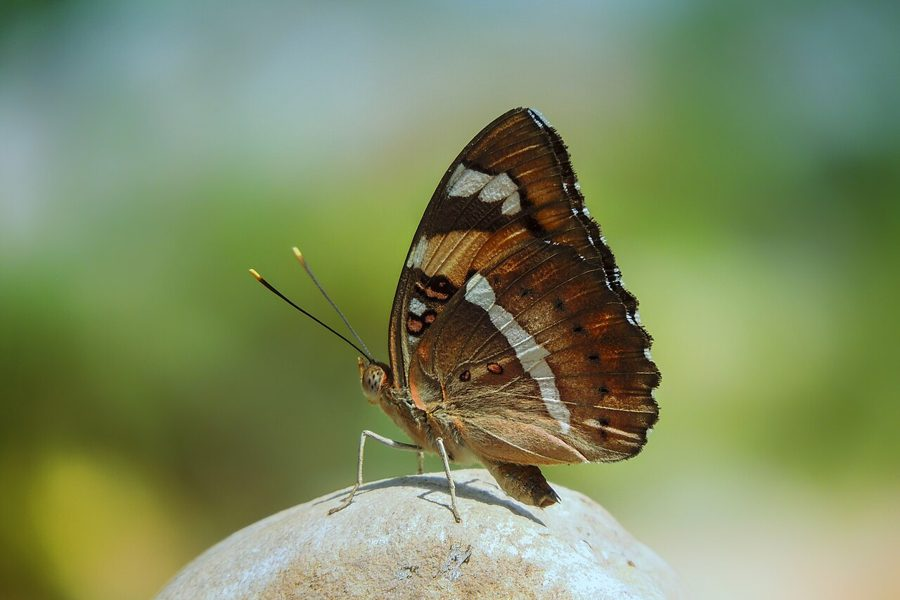

बैरोनेटBaronet
Euthalia nais · Nymphalidae · INS-0264

- Scientific name वैज्ञानिक नाम
- Euthalia nais (Forster, 1771)
- Family कुल
- Nymphalidae
- Hindi हिंदी
- बैरोनेट
- Local names स्थानीय नाम
- baronet, baronet titli, orange baronet
- Status here यहाँ की स्थिति
- native
- Movement आवागमन
- Resident, here all year
- Known from कहाँ दर्ज
- Others have published records from the wider Awadh–Purvanchal plain, none yet from Basti–Ayodhya अवध–पूर्वांचल से दूसरों के प्रकाशित अभिलेख, बस्ती–अयोध्या से अभी नहीं
- IUCN IUCN
- not evaluated
- Review समीक्षा
- not yet reviewed
When to look कब देखें
Expected mainly in March, April, May, June, July, August, September, October, November. मुख्यतः मार्च, अप्रैल, मई, जून, जुलाई, अगस्त, सितंबर, अक्टूबर, नवंबर में अपेक्षित।
Tell it apart from इनसे अलग पहचानें
बैरोनेट / Baronet
Euthalia nais (Forster, 1771) — Nymphalidae
बैरोनेट — अवध के खुले वनों और कछारों में जमीन पर पंख फैलाकर धूप सेंकने वाली चटक नारंगी-पीली निम्फालिड तितली, जिसके पंखों के नीचे ईंट जैसा लाल रंग और सफेद चौड़ी पट्टी होती है।
Quick Identification त्वरित पहचान
| Feature | Description |
|---|---|
| Wingspan | Medium-sized among Indian nymphalids |
| Upperside colour | Bright tawny-orange to ochraceous yellow |
| Upperside markings | Bold black discal bars, postdiscal spots, and margins |
| Underside colour | Dark ochraceous red to brick red |
| Wing base beneath | Marked with crimson-pink spots edged in black |
| Hindwing discal band | Broad, contrasting white transverse band beneath |
| Resting posture | Wings spread completely flat against the ground |
Field tip: Look along sunny woodland paths and dry ravine banks. A medium butterfly with brilliant tawny-orange uppersides and bold black markings that basks flat on sun-baked stones and flies with explosive speed when disturbed is this species.
हिंदी — कैसे पहचानें: पगडंडियों और पत्थरों पर पूरी तरह पंख फैलाकर बैठने वाली नारंगी-काली तितली। इसके पंखों की निचली सतह ईंट जैसी लाल होती है जिस पर सफेद चौड़ी पट्टी और गुलाबी-लाल धब्बे होते हैं।
Morphology आकारिकी
The coloration of Euthalia nais is exceptionally bold and luminous. The upperside ground colour is rich tawny-orange, with the basal areas dusted in fuscous scales. On the forewing, a prominent black transverse bar crosses the apex of the cell, followed by an oval spot enclosing an orange dot, a broad oblique discal bar, and an angulated postdiscal lunular band. The hindwing bears a broad triangular black costal patch and a curved row of postdiscal spots.
The underside presents a striking contrast: the ground colour is dark ochraceous red or terracotta. The wing bases are adorned with crimson-pink spots outlined in jet black. Across the hindwing runs a conspicuous, chalk-white discal band, succeeded by a series of small black dots. The antennae are black with vibrant ochraceous tips.
The thorax and abdomen are tawny red above and shaded with pink below. The eyes are dark reddish brown, large, and alert, while the wing margins bear a chequered fringe of alternating black and white segments.
हिंदी: इसके पंखों का ऊपरी हिस्सा गहरा नारंगी होता है जिस पर चौड़ी काली धारियां और गोल धब्बे होते हैं। पंखों के नीचे का हिस्सा लाल-कत्थई होता है जिस पर चौड़ी सफेद पट्टी और आधार पर गुलाबी बिंदु बने होते हैं।
Behaviour & Ecology व्यवहार और पारिस्थितिकी
Euthalia nais is a robust, sun-loving butterfly celebrated for its powerful and territorial flight. It has a distinctive flight pattern consisting of rapid, vigorous wingbeats followed by flat, stiff-winged glides close to the ground.
Males establish sunny perching territories on low stones, bare patches of earth, or low branches at woodland edges. They aggressively chase away rival males, birds, and other insects before circling back to the exact same perch. The butterfly invariably rests with its wings spread completely flat, basking in direct sunlight. It rarely visits flowers, preferring to feed on fermenting fruits, tree sap, and animal droppings.
During the hottest hours of May and June, when most other butterflies seek deep shade, the Baronet can be seen basking enthusiastically on sun-baked stones and sandy paths. When startled, it flies with explosive speed, shooting low across the terrain.
Females fly more slowly and deliberately, inspecting saplings of Diospyros for suitable oviposition sites in dappled undergrowth.
हिंदी: यह धूप की बहुत शौकीन तितली है और तेज गर्मी में भी पत्थरों पर पंख फैलाकर धूप सेंकती है। नर अपने बैठने के स्थान की जोरदार रखवाली करता है। यह फूलों के बजाय सड़े हुए फलों के रस और पेड़ों से बहने वाले गोंद को खाती है।
Life Cycle / Phenology जीवन चक्र
Females lay solitary eggs on the leaves of host trees. The larva is a marvel of camouflage: bright grass-green with a dorsal row of small purple spots, each abdominal segment bearing long, horizontally projected, feather-like fleshy spines armed with fine green hairs.
These lateral spines lie flat against the leaf surface, completely eliminating any cast shadow and rendering the caterpillar nearly invisible against the foliage. The pupa is short, broad, keeled, and vivid green, adorned with brilliant golden spots and lines, attached by a silk cremaster to a leaf underside.
The pupal stage lasts approximately ten to twelve days in warm summer weather. Upon emergence, the adult hangs from the leaf until its strong flight muscles and wings harden.
Multiple generations are produced from March through November, with a peak during the hot pre-monsoon months and a secondary brood in early autumn.
हिंदी: मादा तितली पत्तियों पर अकेले अंडे देती है। इसकी हरी इल्ली के दोनों तरफ पंख जैसे रेशेदार कांटे होते हैं जो पत्ते पर चिपक जाते हैं जिससे उसकी कोई परछाई नहीं बनती। प्यूपा भी हरे रंग का होता है जिस पर सुनहरे बिंदु चमकते हैं।
Host Plants or Prey आहार
The recorded larval food plants are Tendu (Diospyros melanoxylon) and Sal (Shorea robusta) (Wynter-Blyth 1957, as listed by Funet).
Larvae feed on mature as well as young foliage, resting along the midrib on the upper surface of leaves where their feathered spines match the leaf margins.
Adults are dedicated fruit-feeders, feeding eagerly on the juices of fallen, fermenting fruits in groves, as well as sap leaking from tree trunks and minerals from damp soil.
हिंदी: इसकी इल्लियां तेंदू और साल की पत्तियां खाती दर्ज हैं। वयस्क तितलियां पके और जमीन पर गिरे हुए सड़े फलों के रस तथा पेड़ों के तनों से रिसने वाले मीठे रस को पीती हैं।
Predators / Natural Enemies शत्रु
The extraordinary camouflage of the larva protects it against visually hunting birds, but predatory wasps and stink bugs occasionally discover them.
Adults basking on sunlit stones are stalked by garden lizards and ambushed by insectivorous birds during territorial sorties.
Praying mantises hiding among ground cover ambush adults as they visit fallen fruit.
हिंदी: इल्ली की अद्भुत बनावट उसे चिड़ियों की नजर से बचाती है, पर शिकारी ततैये उसे ढूंढ लेते हैं। पत्थरों पर धूप सेंकती तितलियों को गिरगिट, शिकारी चिड़ियां और सूंड़े पकड़ लेते हैं।
Agricultural / Human Relevance कृषि प्रासंगिकता
The Baronet is completely benign to agriculture. Its caterpillars feed exclusively on native wild trees such as tendu and mountain persimmon, causing no harm to cultivated fruit crops or timber plantations.
In rural areas, adults contribute to the decomposition of fallen, overripe fruits by breaking down pulp and recycling nutrients.
Conserving native scrub woodlands and ravine vegetation directly supports stable populations of this magnificent butterfly.
हिंदी: यह तितली फसलों को किसी प्रकार का नुकसान नहीं पहुंचाती क्योंकि इसकी इल्लियां केवल जंगली तेंदू आदि पेड़ों पर पलती हैं। यह गिरे हुए सड़े फलों का रस चूसकर जंगल के चक्र को बनाए रखने में मदद करती है।
Expected Locally स्थानीय रूप से अपेक्षित
Not a field record. Written from published accounts for eastern Uttar Pradesh. No confirmed local sighting yet — if you have seen it, that is what the atlas needs.
अभी तक स्थानीय पुष्टि नहीं। यह विवरण प्रकाशित स्रोतों से है, किसी अवलोकन से नहीं।
GBIF holds published records from the wider Awadh–Purvanchal plain, none yet from Basti–Ayodhya. In eastern Uttar Pradesh, Euthalia nais is expected in dry and moist deciduous woodlands, ravine borders, and rural groves where tendu and sal grow. A confirmed first record requires a clear photograph with place and date submitted through the project portal.
हिंदी: अवध के कछारी जंगलों, बीहड़ों और तेंदू के पेड़ों वाले क्षेत्रों में इसके मिलने की संभावना है। स्थानीय स्तर पर प्रमाणित करने के लिए इसकी तस्वीर अवश्य भेजें।
Distribution वितरण
Global range: Widely distributed across continental India from the lower Himalayas through the Gangetic plains, central and southern India, and Sri Lanka.
In India: Common in open deciduous woodlands, dry scrub forests, and ravine tracts across northern and central India (Varshney & Smetacek 2015).
In Uttar Pradesh: Recorded across southern dry forest tracts, terai woodlands, and alluvial plains.
In Basti district / eastern UP: Expected in woodland borders and undisturbed scrub areas.
हिंदी: यह पूरे भारत और श्रीलंका के पतझड़ी जंगलों में पाई जाती है। उत्तर प्रदेश के सूखे जंगलों, बीहड़ों और मैदानी इलाकों में इसका वास है।
Research Questions शोध प्रश्न
- How does the abundance of Euthalia nais in Awadh woodlands correlate with the seasonal availability of fallen fermenting fruit?
- What specific visual or olfactory cues attract territorial males to particular perching stones year after year?
- Does the feathered lateral spine morphology of the larva provide thermal regulation advantages in addition to shadow camouflage?
- How do rural harvesting practices of Diospyros melanoxylon leaves (tendu patta) influence local larval survival?
- क्या अवध के जंगलों में पके और सड़े हुए फलों पर यह तितली रस चूसते हुए देखी जाती है?
- क्या नर तितली जमीन पर पंख फैलाकर धूप सेंकते हुए अपने क्षेत्र की रक्षा करती है?
Similar Species मिलती-जुलती प्रजातियाँ
| Species | How to tell apart | हिंदी |
|---|---|---|
| Euthalia aconthea | Larger butterfly with olive-brown uppersides, lacking bright tawny-orange ground colour | बड़ा आकार, जैतूनी-भूरा रंग और नारंगी रंग का अभाव |
| Melitaea didyma | Smaller, paler fritillary with delicate rounded wings and prominent chequered fringes | छोटा आकार, चितकबरी झालर और पंख के नीचे सफेद चौड़ी पट्टी का अभाव |
| Cupha erymanthis | Lacks bold black discal markings and crimson base spots below, possessing a simple yellow discal band | साधारण पीली पट्टी, नीचे गुलाबी-लाल धब्बों का अभाव |
Field rule: Instantly recognized by its rich tawny-orange upperside with bold black bars, flat sun-basking posture, and bright red underside with white discal band.
हिंदी: पंखों के ऊपर चटक नारंगी-काला रंग, नीचे ईंट जैसा लाल रंग व सफेद पट्टी, और जमीन पर चपटी होकर बैठने की आदत इसकी अचूक पहचान है।
Taxonomy & Classification वर्गीकरण
Original description. Euthalia nais was originally described as Papilio nais by Johann Reinhold Forster in 1771 (Novae Species Insectorum. Centuria I, p. 73). It has also historically been treated under the genus Symphaedra Hübner.
Subspecies. Monotypic — no subspecies are recognized across the Indian plains and peninsula.
Family and order placement. Classified within the family Nymphalidae, subfamily Limenitidinae, tribe Adoliini. Recognized by strong flight, flat perching postures, and fruit-feeding habits.
IUCN status rationale. Not evaluated globally by the IUCN Red List. It remains common and secure across deciduous woodland habitats.
हिंदी: इसका वैज्ञानिक नामकरण 1771 में जोहान रेनहोल्ड फोर्स्टर ने किया था। यह निम्फालिडे कुल की तितली है और इसे प्रकृति में कोई खतरा नहीं है।
Photo Gallery फोटो गैलरी
No photos yet — add field photos to media/species/baronet/ and run node scripts/sync_photos.js.
Photos needed आवश्यक फोटो
- [ ] Adult basking flat on sun-baked stone or path (पत्थर पर पंख फैलाए बैठी तितली)
- [ ] Underside pattern showing brick-red colour and white band (निचले पंखों की लाल और सफेद बनावट)
- [ ] Cryptic larva with feathered lateral spines on Diospyros leaf (तेंदू के पत्ते पर इल्ली)
References संदर्भ
- Forster, J. R. (1771). Novae Species Insectorum. Centuria I. London.
- Bingham, C. T. (1905). Fauna of British India, Butterflies, vol. 1. Taylor and Francis, London.
- Wynter-Blyth, M. A. (1957). Butterflies of the Indian Region. Bombay Natural History Society, Bombay.
- Kehimkar, I. (2008). The Book of Indian Butterflies. Bombay Natural History Society, Oxford University Press, Mumbai.
- Varshney, R. K. & Smetacek, P. (2015). A Synoptic Catalogue of the Butterflies of India. Butterfly Research Centre, Bhimtal.
- GBIF Occurrence Data — Euthalia nais, India (2025).
Source file: species/fauna/insects/baronet.md